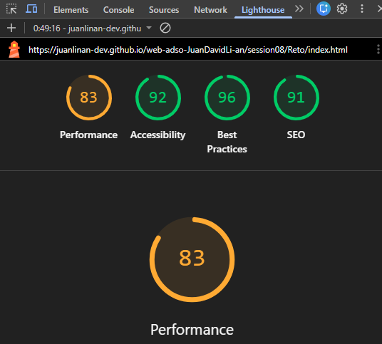
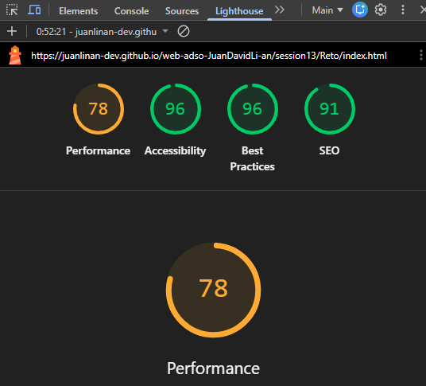

1. Resultados de Lighthouse (ventana de incógnito)

Sesión 8 — CSS propio
URL: session08/Reto/index.html
- Performance: 83
- Accessibility: 92
- Best Practices: 96
- SEO: 91

Sesión 13 — Bootstrap 5
URL: session13/Reto/index.html
- Performance: 78
- Accessibility: 96
- Best Practices: 96
- SEO: 91
2. Tabla comparativa
| Criterio | Sesión 8 (HTML + CSS propio) | Sesión 13 (Bootstrap 5) |
|---|---|---|
| Puntaje de Rendimiento (Performance) | 83 — 5 puntos por encima de la versión con Bootstrap en esta medición. | 78 — Ligera disminución frente a Sesión 8 al incorporar recursos adicionales de Bootstrap (CSS/JS). |
| Accesibilidad (Accessibility) | 92 — Buen nivel base en estructura y contraste. | 96 (+4 puntos) — Mejora con componentes semánticos/estructurados y controles de formulario estándar de Bootstrap. |
| Mejores Prácticas y SEO | Best Practices: 96 | SEO: 91 | Best Practices: 96 | SEO: 91 — Se mantienen exactamente iguales en ambas versiones. |
| Líneas de CSS escritas | Mayor cantidad de CSS propio: definición completa de reset, layout, tarjetas, botones y reglas visuales. | Mínimo CSS propio en styles.css: solo variables y ajustes de identidad de marca, sin Flexbox, Grid ni media queries propias. |
| Tiempo que tomó | Mayor dedicación en la maquetación inicial y ajuste fino de cada bloque y estado responsivo. | Más ágil para armar columnas, tarjetas, barra de navegación colapsable, validación de formulario y modal. |
| Qué tan única se ve | Identidad muy propia desde el primer momento, con control total sobre cada detalle visual. | Requiere personalizar variables (--bs-btn-*, tipografía, espaciados y colores) para que no luzca genérica. |
| Qué tan fácil fue hacerla responsive | Requiere escribir y ajustar media queries y propiedades de Flexbox/Grid según el tamaño de pantalla. | Más directo mediante clases de rejilla y breakpoints (col-12 col-md-6, row-cols-lg-3, navbar-expand-md). |
3. Conclusión: ¿Bootstrap o kit propio en el proyecto final?
En el proyecto final, la opción más equilibrada es combinar nuestro propio kit base de CSS con el uso puntual de Bootstrap cuando aporte valor claro.Sin embargo se utilizara mayormente el Bootstrap ya que facilita armar componentes interactivos y responsivos con menos código propio.